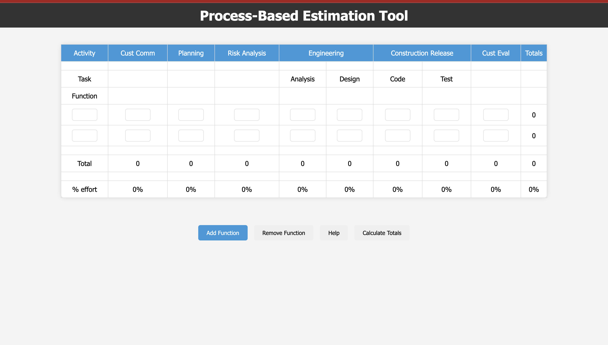
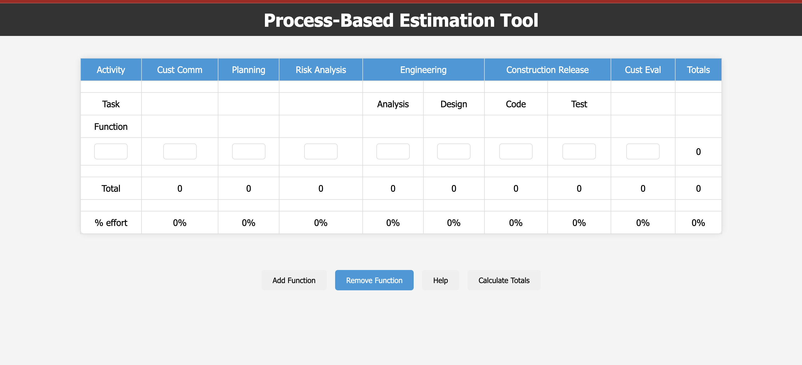
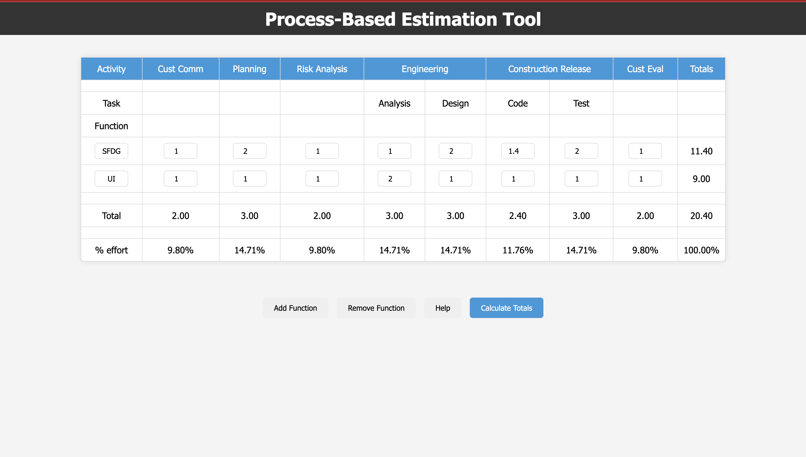

The process-based estimation tool is used to estimate project efforts by breaking down the planned process into smaller tasks, activities, and actions. It involves delineating software functions, performing framework activities for each function, and then estimating the effort required for each software process activity. Users add functions for problems they will solve in their development and estimate the effort in person months for each task the tool will then calculate the percent effort for each task.
Users click the add function button for the amount of problem functions they have established is needed for thier project. 
Users click the delete function button to remove functions that are unwanted in their project. If there are only 4 problem functions the user needs and there's 5 function rows the user can delete a row to cater to their unique circumstances. 
Once the user enters their data for each task and activity for each problem function they created the program will calculate the total person months for each problem function and the percent effort that each task/activity will take in terms of total project person months. 
R.S. Pressman and B. Maxim, Software Engineering: A Practitioner’s Approach, 9th Edition, McGraw Hill, 2020.